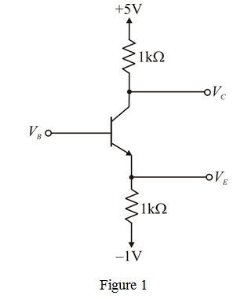

To calculate and for  = 0
= 0
Applying Kirchhoff’s voltage law to base emitter circuit
Therefore,
Refer to Figure P6.55 in text book.
By using source transformations change current sources into voltage sources as shown in Figure 1.

To calculate and for = 0
Applying Kirchhoff’s voltage law to base emitter circuit
Therefore,
Applying Kirchhoff’s voltage law to emitter loop gives
Hence the emitter voltage is .
Applying Kirchhoff’s voltage law to collector loop gives
Hence the collector voltage is .
To calculate the value of at which transistor cutoff can be determined from the fact that at cutoff transistor does not conduct
Given that at edge of conduction
Hence at cutoff 
Applying Kirchhoff’s voltage law to emitter loop gives
Applying Kirchhoff’s voltage law to base emitter circuit
Applying Kirchhoff’s voltage law to collector loop gives
Therefore, At cutoff condition values are and
At saturation .
Applying Kirchhoff’s voltage law to collector to base loop we can write
.….. (1)
Applying Kirchhoff’s voltage law to emitter loop gives
.….. (2)
We know that at the edge of saturation 

From equations (1) and (2) we can write
Consider that, .
Applying KVL to base emitter circuit
Therefore at saturation  , and
, and  are ,respectively.
are ,respectively.